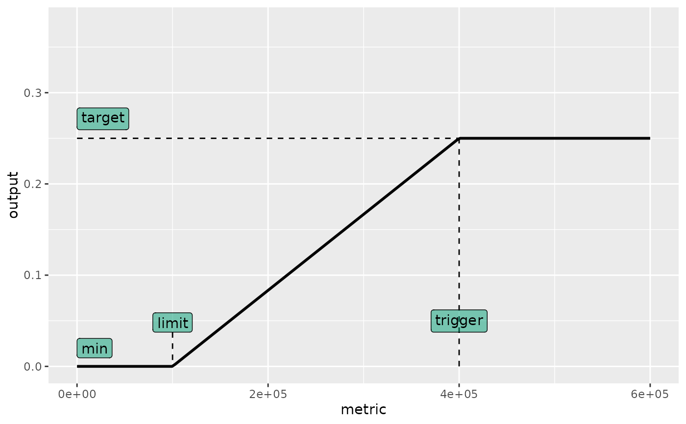
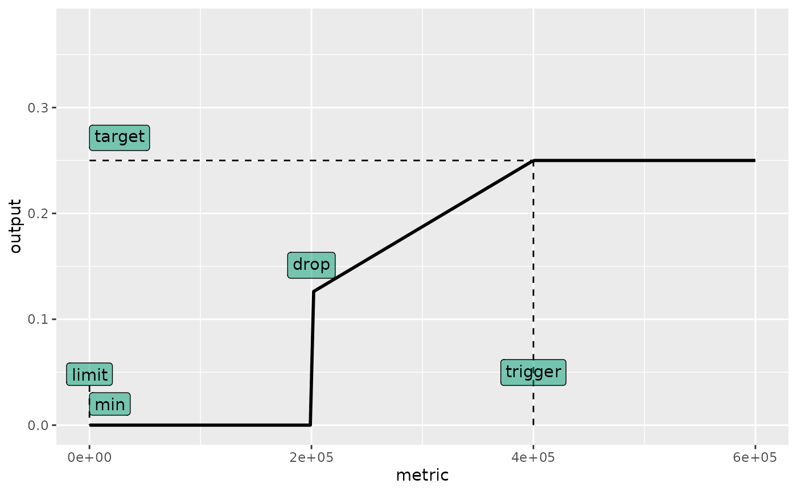
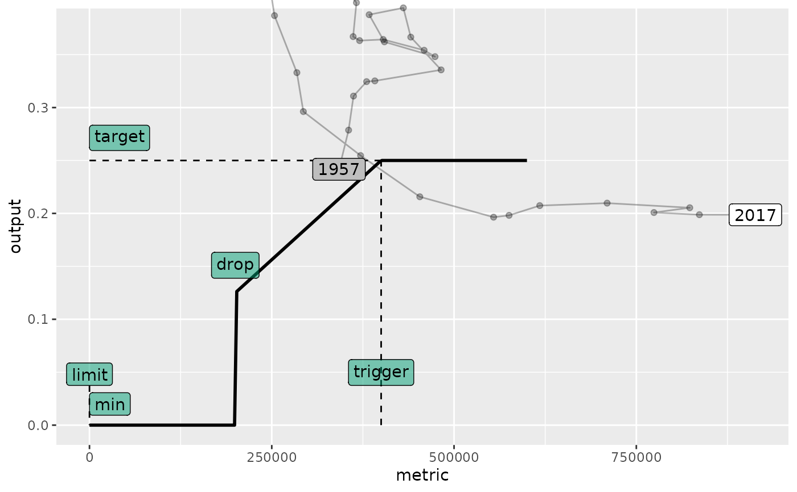
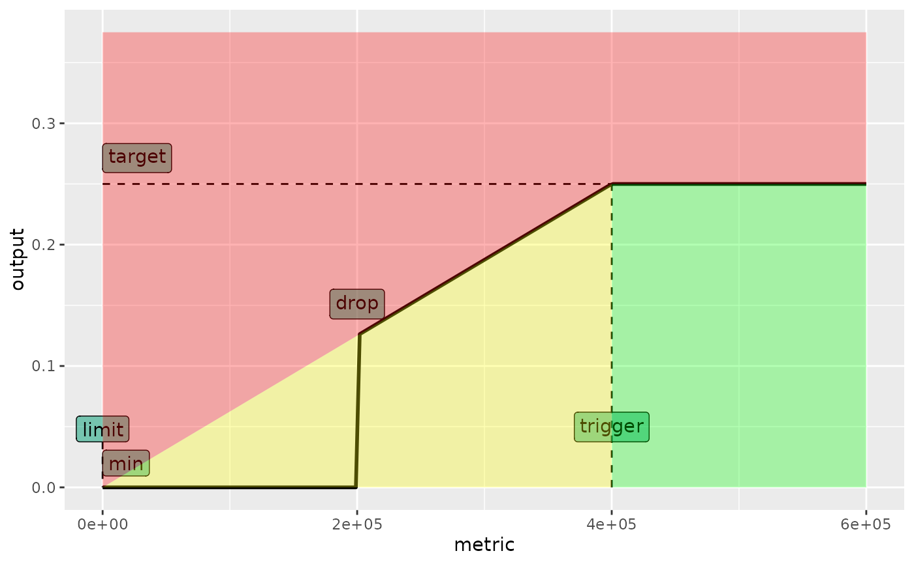
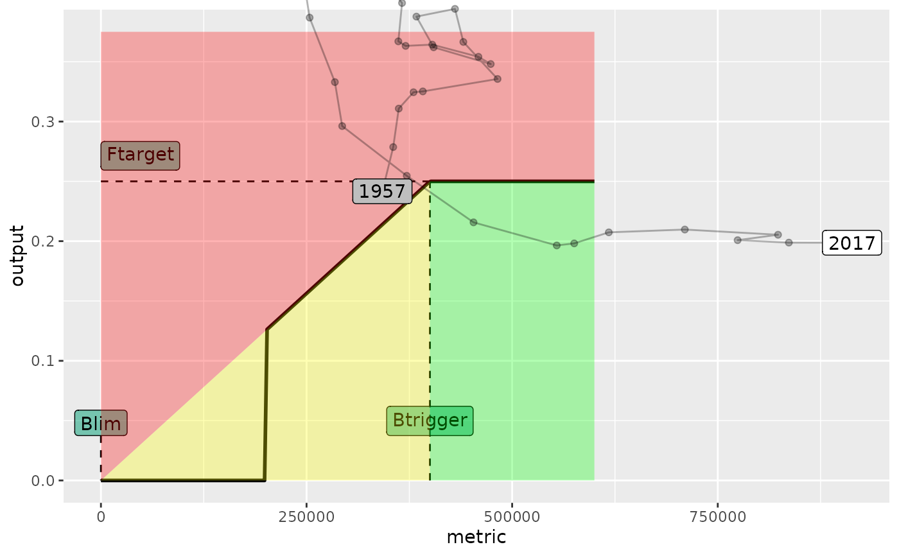
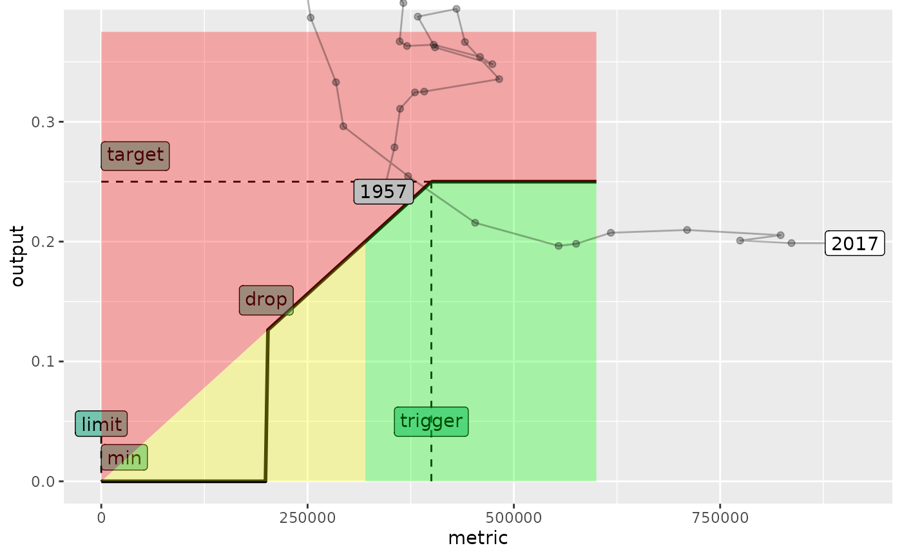
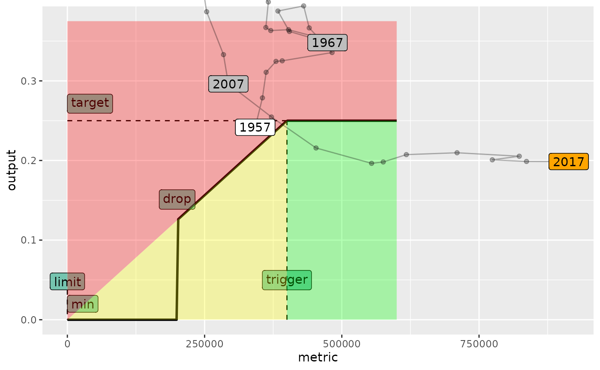
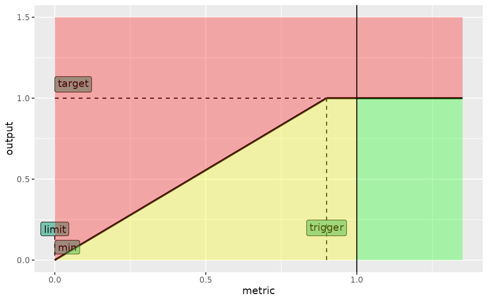

Plots the shape of a hockey-stick HCR, as implemented by hockeystick.hcr,
from a set of arguments or an mseCtrl/mpCtrl object.
Arguments
- args
A list of HCR arguments (as used by
hockeystick.hcr), or anmseCtrlormpCtrlobject from which those arguments are extracted.- obs
An optional FLStock from which historical values of
metricandoutputare computed and added to the plot.- kobe
If
TRUE, a Kobe-style colour background (red/yellow/green) is added to the plot, logical.- xtarget
The actual target value on the metric axis (e.g. Btarget), used to draw the Kobe background, numeric. Defaults to
args$trigger.- alpha
Transparency level applied to the Kobe background polygons, numeric.
- xlim
Upper limit of the x-axis (metric), numeric. Defaults to 1.50 times
trigger.- labels
A named character vector of labels for
lim,trigger,min,targetanddrop, used to annotate the plot. Set toNULLto omit labels.
Details
The plot shows the control variable (output) against the stock metric,
with dashed lines and labels marking the lim, trigger, min, target
and, when set, drop reference points. If obs is given, an FLStock, the
historical trajectory of metric and output is added to the plot. If
kobe = TRUE, a Kobe-style background of red, yellow and green zones is
added, computed with respect to xtarget, the actual target value on the
metric axis (e.g. Btarget), which defaults to the trigger value.
Examples
data(ple4)
# Set example HCR arguments
args <- list(lim=1e5, trigger=4e5, target=0.25, min=0,
metric="ssb", output="fbar")
# Plot hockeystick.hcr for given arguments
plot_hockeystick.hcr(args)

# Plot wheh 'drop' has been set
args <- list(lim=0, trigger=4e5, target=0.25, min=0, drop=2e5,
metric="ssb", output="fbar")
plot_hockeystick.hcr(args)

# Add metric and output from FLStock
plot_hockeystick.hcr(args, obs=ple4)

# Superpose Kobe colours
plot_hockeystick.hcr(args, kobe=TRUE)

data(ple4)
# Change labels
plot_hockeystick.hcr(args, obs=ple4, kobe=TRUE,
labels=c(limit="Blim", trigger="Btrigger", target="Ftarget"))

# Set actual x (e.g. biomass) target.
plot_hockeystick.hcr(args, obs=ple4, kobe=TRUE, xtarget=args$trigger * 0.80)

#' Add line and label for Btarget
plot_hockeystick.hcr(args, obs=ple4, kobe=TRUE, xtarget=args$trigger * 0.80) +
geom_vline(xintercept=args$trigger * 0.80, linetype=3) +
geom_label(x=args$trigger * 0.80, y=0.7, label="SBtarget")
# ADD decade labels
plot_hockeystick.hcr(args, obs=ple4, kobe=TRUE) +
geom_label(data=model.frame(metrics(ple4[, ac(seq(1957,2017, by=10))],
list(metric=ssb, output=fbar))), aes(label=year),
fill=c("white", rep("gray", 5), "orange"))

# Example on relative terms where trigger < xtarget
args <- list(lim=0., trigger=0.9, target=1, min=0,
metric="ssb", output="fbar")
plot_hockeystick.hcr(args, kobe=TRUE, xtarget=1) +
geom_vline(xintercept=1)
